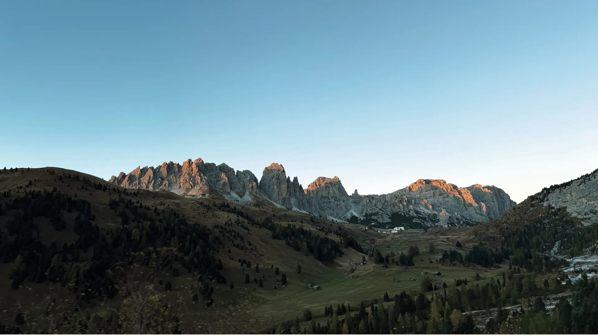

Com, contenu & communauté · Toulouse
Hey, c'est Cloé.
Je fais grandir les marques et leurs communautés : sur les réseaux, en print et sur le terrain.
Mes terrains de jeu
- Social media
- Identité visuelle
- Influence & affiliation
- Emailing
- Rédaction web
- Direction artistique
- Partenariats
- LinkedIn & ghostwriting
- Événementiel
- Com interne
- Visuels produit & IA
Projets pro


Labo
Mes projets d'école et mes projets perso : logos, photos, expérimentations.
À propos
Montagne, van et running : j'aime les marques qui ont une vraie communauté, et les faire grandir.
Mon parcours